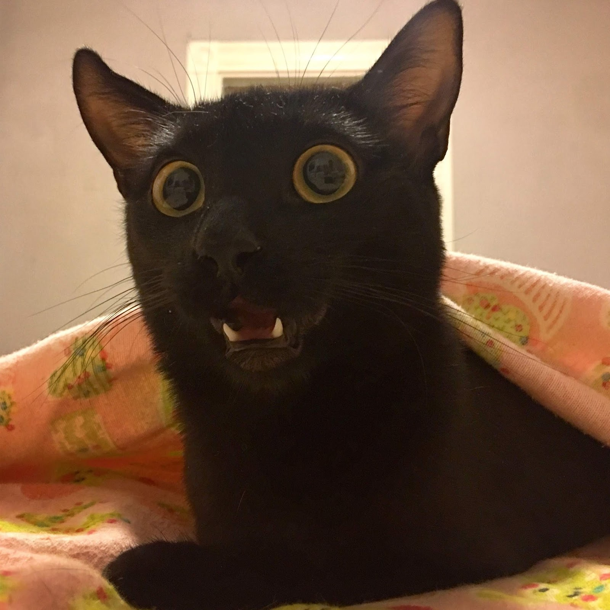

Cats are cool because they are independent and don't need to be taken out for walks. They are also very clean and don't need to be bathed. They are also very cute and cuddly. They are also very good at catching mice and other pests. They are also very good at keeping you company. They are also very good at being cute. They are also very good at being cats.
According to the website above. Some Siamese cats appear cross-eyed because the nerves from the left side of the brain go to mostly the right eye and the nerves from the right side of the brain go mostly to the left eye. This causes some double vision, which the cat tries to correct by “crossing” its eyes.
So very interesting right.
Cats are cool because they are independent and don't need to be taken out for walks. They are also very clean and don't need to be bathed. They are also very cute and cuddly. They are also very good at catching mice and other pests. They are also very good at keeping you company. They are also very good at being cute. They are also very good at being cats.
According to the website above. Some Siamese cats appear cross-eyed because the nerves from the left side of the brain go to mostly the right eye and the nerves from the right side of the brain go mostly to the left eye. This causes some double vision, which the cat tries to correct by “crossing” its eyes.
So very interesting right.
 Cats are cool because they are independent and don't need to be taken out for walks. They are also very clean and don't need to be bathed. They are also very cute and cuddly. They are also very good at catching mice and other pests. They are also very good at keeping you company. They are also very good at being cute. They are also very good at being cats. According to the website above. Some Siamese cats appear cross-eyed because the nerves from the left side of the brain go to mostly the right eye and the nerves from the right side of the brain go mostly to the left eye. This causes some double vision, which the cat tries to correct by “crossing” its eyes. So very interesting right.